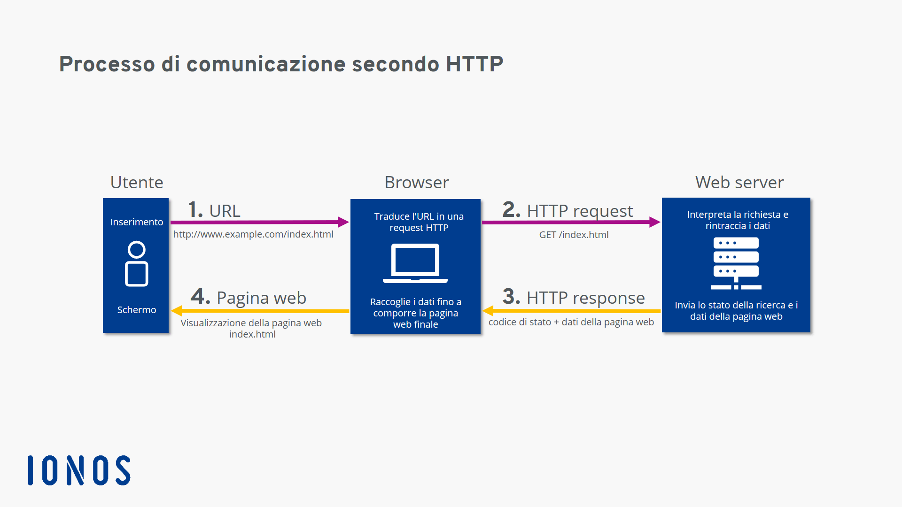

I protocolli
Introduzione
Un'applicazione basata su microservizi è un sistema distribuito in esecuzione in più processi o servizi, in genere anche in più server o host. Ogni istanza del servizio è in genere un processo. Di conseguenza, i servizi devono interagire usando un protocollo di comunicazione tra più processi, ad esempio HTTP, AMQP o un protocollo binario come TCP, a seconda della natura di ogni servizio.
Tipi di comunicazione
Classificazione
Questi tipi di comunicazione possono essere classificati in due assi, il primo asse definisce se il
protocollo è sincrono o asincrono.
Protocollo sincrono.HTTP è un protocollo sincrono. Il client invia una richiesta e attende una risposta dal servizio. Tale
processo è indipendente dall'esecuzione del codice client che può essere sincrono (thread bloccato) o
asincrono (thread non bloccato e la risposta alla fine raggiunge un callback). L'aspetto importante è
che il protocollo (HTTP/HTTPS) è sincrono e il codice client può continuare l'attività solo quando
riceve la risposta del server HTTP.

Protocollo asincrono. Altri protocolli quali AMQP (un protocollo supportato da molti sistemi operativi e ambienti
cloud) usano messaggi asincroni. Il codice client o
il mittente del messaggio in genere non attende una risposta. Invia semplicemente il messaggio
analogamente all'invio di un messaggio a una coda RabbitMQ o a un qualsiasi altro broker di messaggi.
Secondo asse
Singole e Multiple
Il secondo asse definisce se la comunicazione ha un singolo destinatario o più destinatari:
Singola.Ogni richiesta deve essere elaborata da esattamente un destinatario o servizio. Un esempio
di questo tipo di comunicazione è il Command pattern.

MultipliOgni richiesta può essere elaborata da zero a più destinatari. Questo tipo di comunicazione deve essere
asincrono. Un esempio è il meccanismo di pubblicazione/sottoscrizione usato in schemi come
l'architettura basata su eventi. Questo meccanismo si basa su un'interfaccia del bus di eventi o su un broker
di messaggi per la propagazione degli aggiornamenti dei dati tra più microservizi attraverso gli eventi. In
genere viene implementato con un bus di servizio o un elemento simile, ad esempio il bus di servizio di
Azure usando argomenti e sottoscrizioni.